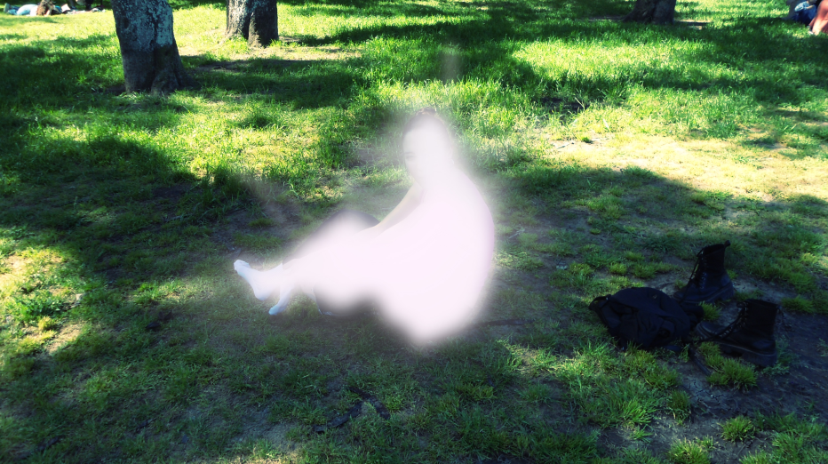

Soy diseñadora integral, graduada de la Universidad Torcuato Di Tella (2025), con especialización en Comunicación y Cultura.
En mi formación trabajé resolviendo todo tipo de problemas
Mi interés se centra en el desarrollo de identidades visuales para proyectos y marcas, abordando cada proceso desde una mirada sensible y estratégica, atenta a las necesidades particulares de cada caso.
Consibo el diseño como una herramienta estratégica para la comunicación de mensajes sensoriales y emocionales, combinando creatividad y precisión en cada propuesta visual. La mirada integral permite entender el problema en diferentes niveles, y encontrar una solución más consiente y humana.
Busco participar de proyectos innovadores y desafiantes, que me permitan explorar y crecer.